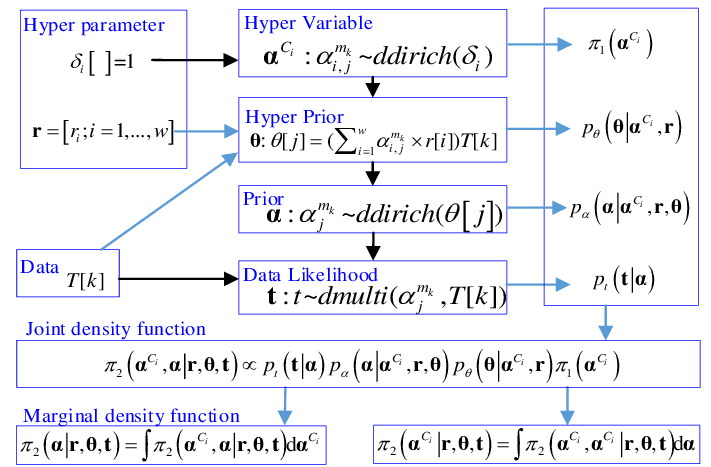

import pandas as pd
from sklearn.compose import make_column_transformer
from sklearn.preprocessing import OneHotEncoder
from sklearn.preprocessing import StandardScaler
df = pd.read_csv("https://dlsun.github.io/pods/data/bordeaux.csv")Tip
The Final Project instructions page has suggestions for where to find datasets.
Your group member names.
Information about the dataset(s) you intend to analyze:
Research Questions: You should have one primary research question and a few secondary questions
Preliminary exploration of your dataset(s): A few simple plots or summary statistics that relate to the variables you plan to study.
Identify a research question of interest.
Perform preprocessing steps
Measure similarity between observations by calculating distances.
Every analysis we will do assumes a structure like:
(output) = f(input) + (noise)
… or, if you prefer…
target = f(predictors) + noise
In either case: we are trying to reconstruct information in data, and we are hindered by random noise.
The function \(f\) might be very simple…
\[y_i = \mu + \epsilon_i\]
“A person’s height is the true average height of people in the world, plus some randomness.”
… or more complex…
\[y_i = 0.5*x_{1i} + 0.5*x_{2i} + \epsilon_i\]
“A person’s height is equal to the average of their biological mother’s height and biological father’s height, plus some randomness”
Tip
Do you think there is “more randomness” in the first function or this one?
… or extremely, ridiculously complex…
… and it doesn’t have to be a mathematical function at all!
The process can just a procedure:
\[y_i = \text{(average of heights of 5 people with most similar weights)} + \epsilon_i\]
Our goal is to reconstruct or estimate or approximate the function / process \(f\) based on training data.
Instead of committing to one \(f\) to estimate, we might propose many options and see which one “leaves behind” the least randomness (has the smallest errors).
Column Transformer
Pipeline
Fit
Pipeline(steps=[('columntransformer',
ColumnTransformer(transformers=[('standardscaler',
StandardScaler(),
['summer', 'har', 'sep',
'win', 'age'])])),
('kneighborsregressor', KNeighborsRegressor())])In a Jupyter environment, please rerun this cell to show the HTML representation or trust the notebook. Pipeline(steps=[('columntransformer',
ColumnTransformer(transformers=[('standardscaler',
StandardScaler(),
['summer', 'har', 'sep',
'win', 'age'])])),
('kneighborsregressor', KNeighborsRegressor())])ColumnTransformer(transformers=[('standardscaler', StandardScaler(),
['summer', 'har', 'sep', 'win', 'age'])])['summer', 'har', 'sep', 'win', 'age']
StandardScaler()
KNeighborsRegressor()
The most common way to measure “leftover noise” is the sum of squared error or equivalently, the mean squared error.
real_prices predicted_prices squared error
0 37.0 36.2 0.64
1 63.0 41.4 466.56
2 45.0 46.6 2.56
3 22.0 28.8 46.24
4 18.0 46.4 806.56
5 66.0 35.2 948.64
6 14.0 13.0 1.00
7 100.0 56.6 1883.56
8 33.0 40.4 54.76
9 17.0 16.0 1.00
10 31.0 37.0 36.00
11 11.0 12.2 1.44
12 47.0 32.0 225.00
13 19.0 26.0 49.00
14 11.0 11.8 0.64
15 12.0 18.2 38.44
16 40.0 29.8 104.04
17 27.0 24.8 4.84
18 10.0 13.6 12.96
19 16.0 28.8 163.84
20 11.0 19.8 77.44
21 30.0 24.0 36.00
22 25.0 18.8 38.44
23 11.0 25.0 196.00
24 27.0 18.4 73.96
25 21.0 18.4 6.76
26 14.0 25.8 139.24The most common way to measure “leftover noise” is the sum of squared error or equivalently, the mean squared error.
Now let’s try it for some different values of \(k\)
for k in [1, 3, 5, 10, 25]:
pipeline = make_pipeline(
ct,
KNeighborsRegressor(n_neighbors = k)
)
pipeline = pipeline.fit(X = df_train, y = df_train['price'])
pred_y_train = pipeline.predict(X = df_train)
((df_train['price'] - pred_y_train)**2).mean()np.float64(0.0)
np.float64(123.2304526748971)
np.float64(200.57629629629628)
np.float64(241.37518518518516)
np.float64(378.9575703703703)Oh no! Why did we get an error of 0 for \(k = 1\)?
Because the closest wine in the training set is… itself.
So, our problem is:
Solution: Let’s make a pretend test data set!
We will train on the years up to 1970
We will test on the years 1971 to 1980
We will evaluate based on model performance on the test data.
for k in range(1,15):
pipeline = make_pipeline(
ct,
KNeighborsRegressor(n_neighbors = k))
pipeline = pipeline.fit(X = df_train_new,
y = df_train_new['price'])
pred_y_test = pipeline.predict(X = df_test_new)
print(str(k) + ":" + str(((df_test_new['price'] - pred_y_test)**2).mean()))1:183.0
2:139.85
3:123.78888888888892
4:159.34375
5:121.81199999999998
6:83.28333333333333
7:86.08163265306123
8:86.465625
9:73.12839506172841
10:72.263
11:89.03801652892564
12:133.99791666666667
13:162.23136094674555
14:169.534693877551Here we tried the same type of model (KNN) each time.
But we tried different models because we used different values of \(k\).
This is called model tuning!
Perform tuning for a KNN model, but with all possible values of k.
Do this for three column transformers:
Using all predictors.
Using just winter rainfall and summer temperature.
Using only age.
Which of the many model options performed best?
What other types of models could we have tried?
What other column transformers could we have tried?
What other measures of error could we have tried?
What if we had used a different test set?
What if our target variable was categorical?
For each model proposed:
Establish a pipeline with transformers and a model.
Fit the pipeline on the training data (with known outcome).
Predict with the fitted pipeline on test data (with known outcome).
Evaluate our success (i.e., measure noise “left over”).
Then:
Select the best model.
Fit on all the data.
Predict on any future data (with unknown outcome).
Which models to try
Which column transformers to try
How much to tune
How to measure the “success” of a model